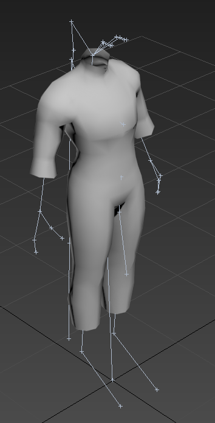
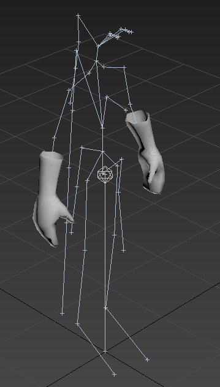
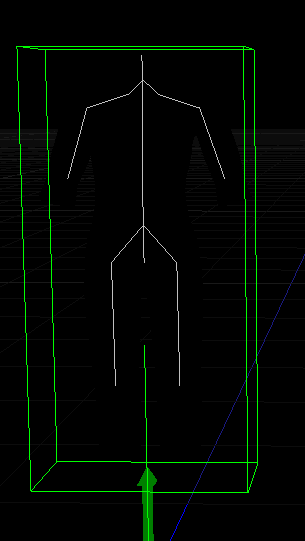

Hey guys, Im using a same skeleton to separate my character on many parts of meshes (body, hands, etc), but I got a problem and I dont found any solution until now.
Body:

Hands:

I want to combine both models to share same animation… The problem its:
when I import firstly body, this will be the master model, but Urho selects only used bones, and body dont use same bones of hands…

This way I get the hands imported, but not your bones. I need exactly this way, because it isnt a clothes, so will not have a “master model” with all bones. I’ve already tried to made a custom mesh using all bones, change RootNode and nothing worked.
Demonstration of the problem:
https://puu.sh/zMI0h/95af1304c5.mp4
Someone knows what I should to do?
Thanks.